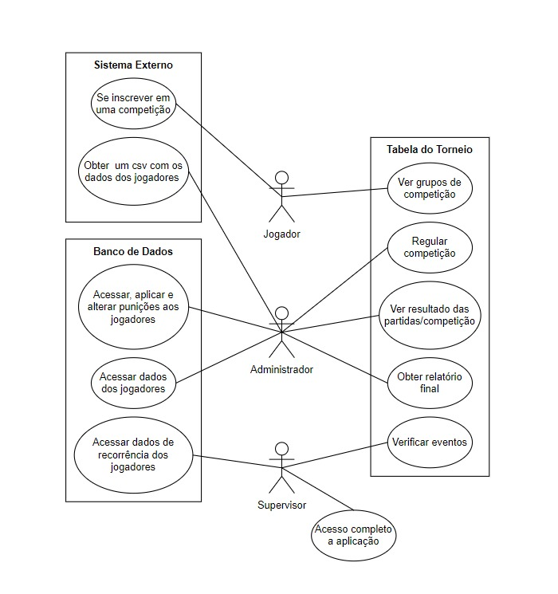

Declaração de escopo - Matcher
Histórico de Revisão
| Data | Versão | Descrição | Autor(es) |
|---|---|---|---|
| 16/10/2023 | 0.1 | Criação do documento | Lucas Queiroz João Eduardo Rodrigo Mattos |
| 23/10/2023 | 1.0 | Documento para entrega | Lucas Queiroz Lucas Meireles João Pedro Rodrigo Mattos |
| 31/10/2023 | 1.1 | Alteração do Banco de Dados | Philipe Morais |
Problema/Sistema de software
Definição da equipe de trabalho
| Aluno | Matrícula |
|---|---|
| JOÃO EDUARDO PEREIRA RABELO | 180053299 |
| FABIO ALESSANDRO TORRES SANTOS | 200037170 |
| JOAO PEDRO DA SILVA RODRIGUES | 211031074 |
| LUCAS HENRIQUE LIMA DE QUEIROZ | 190091703 |
| LUCAS OLIVEIRA MEIRELES | 190016647 |
| PHILIPE BARBOSA DE MORAIS | 211062830 |
| RODRIGO MATTOS DE FIGUEIREDO AYRES BEZERRA | 180108875 |
Declaração do problema, metodologia, tecnologias e atividades
O chaveamento de torneios de e-sports para algumas formas especiais de competição é realizado manualmente, de forma que organizadores precisam verificar longos arquivos .csv para definir os confrontos. O Matcher surge como uma oportunidade para automatizar esse processo. Além disso, ele será usado para reconhecer dados repetidos em torneios separados e para gerar relatórios de torneios.
Utilizaremos, como tecnologias, React com Typescript, para o Front-end. Para o Back-end, utilizaremos o SGBD PostgreSQL, o ambiente de runtime NodeJS, também com Typescript, o ORM Prisma e o framework Express. Também usaremos o Docker para conteinerização. Git e Github serão empregados no versionamento do software. O MkDocs será usufruído para a documentação. Escolhemos essas tecnologias porque alguns membros do grupo já as conhecem.
Nossa abordagem é ágil, com ciclo de vida ScrumXP. Com base no Scrum vamos utilizar dos rituais de Daily Scrum, Sprint Planning, Sprint Review e Sprint Retrospective. A duração de uma sprint é de uma semana. Além disso, vamos aproveitar as técnicas de Pair Programming, Code Review e Integração Contínua.
Vamos utilizar as métricas Velocity e Throughput. Como abordagem de testes, usaremos de Testes Unitários e de Integração. Escreveremos os testes unitários ao longo da implementação de uma história de usuário.
Backlog do Produto
Perfis de acesso
| # | Nome do perfil | Características do perfil | Permissões de acesso |
|---|---|---|---|
| 1 | Supervisor | Responsável por verificar e analisar todos os aspectos a todo momento da realização dos eventos. É também a pessoa capaz de acessar dados extras de recorrências de jogadores e/ou vencedores nos eventos. | Acesso completo às funcionalidades da aplicação. |
| 2 | Administrador | Será o principal indivíduo a organizar a competição, sendo responsável por indicar quais serão os jogadores e grupos de partidas, além de ser o suporte ativo durante todo o decorrer do evento para garantir que este ocorra e os jogadores estejam seguindo os procedimentos e regras. | Acesso a dados dos jogadores, grupos da competição, resultados de partidas, relatório final. |
| 3 | Jogador | Indivíduo que não possui permissões de organização, seu uso é limitado a ter o conhecimento de qual o grupo a que pertence na competição. | Grupos de tabela ao qual pertence. |
Cenários
| Numeração do cenário | Nome do cenário |
|---|---|
| 1 | Processamento de arquivo CSV |
| 2 | Agrupamento de confrontos |
| 3 | Partidas |
| 4 | Persistência de dados dos jogadores |
Backlog do produto
| Numeração (Cenário/Requisito) | Nome do requisito | Tipo de requisito | Priorização do requisito | Descrição sucinta do requisito | User Stories associadas |
|---|---|---|---|---|---|
| C1-R1 | Importação de CSV | Funcional | Must | A aplicação importa um arquivo CSV. | US 1 |
| C1-R2 | Interpretação de CSV | Funcional | Must | A aplicação interpreta e organiza os dados do CSV. | US 1 |
| C1-R3 | Visualização de dados | Funcional | Must | A aplicação apresenta os dados organizados do CSV ao usuário | US 1 |
| C2-R1 | Sortear as chaves | Funcional | Must | Sorteio dos nomes de jogadores | US 2 |
| C2-R2 | Exportação de tabela | Funcional | Should | Exportação de uma tabela dos confrontos | US 3 |
| C3-R1 | Confirmar presença dos jogadores | Funcional | Should | Deverá ser possível confirmar e registrar os nomes que compareceram à partida ou não. | US 4 |
| C3-R2 | Punir jogadores | Funcional | Could | Deverá ser possível registrar punições em jogadores durante o evento | US 5 |
| C3-R3 | Receber dados da partida | Funcional | Could | Receber os dados de uma partida, após o seu fim. | US 6 |
| C3-R4 | Busca de dados de partida | Funcional | Should | Buscar os dados de uma partida utilizando API externa. | US 6 |
| C3-R5 | Registro manual dos vencedores | Funcional | Must | Registrar manualmente a posição final dos jogadores do grupo na rodada. | US 6 |
| C3-R6 | Obtenção de vencedores de cada grupo | Funcional | Must | A aplicação deverá ser capaz de identificar os vencedores de cada grupo por rodada. | US 6 |
| C4-R1 | Obtenção de vencedores de competição | Funcional | Should | A aplicação deverá ser capaz de repassar ao usuário o resultado final da competição. | US 7 |
| C4-R2 | Persistir dados do torneio | Funcional | Should | A aplicação deverá registrar a informação dos jogadores em documento geral para frequências de participantes e vencedores. | US 7 e US 8 |
| C4-R3 | Gerar relatório do torneio | Funcional | Should | A aplicação deverá ser capaz de emitir um relatório de finalização do evento | US 8 |
| C4-R4 | Emitir os dados de torneios de um conjunto de jogadores | Funcional | Should | A aplicação deve ser capaz de emitir um relatório do banco de dados de todos os eventos | US 9 |
| C4-R5 | Armazenar dados dos jogadores | Funcional | Should | A aplicação armazena os dados dos jogadores recebidos via CSV no banco de dados | US 9 |
| RNF1 | Usabilidade | Não funcional | Must | A aplicação deverá conter as cores principais da empresa Megalodon, sendo elas Azul, Preto e Branco. A aplicação não poderá ter cores claras como composição principal de suas telas. | - |
| RNF2 | Desempenho | Não funcional | Must | A aplicação não poderá ter tempo de resposta superior a 1 minuto entre ações. | - |
| RNF3 | Segurança | Não funcional | Must | O acesso aos recursos dos sistemas deve ser limitado a cada perfil de usuário, seguindo as especificações dos perfis de acesso. | - |
| RNF4 | Suportabilidade | Não funcional | Must | O sistema deve funcionar para navegadores Google Chrome cuja versão é maior ou igual a 118.0.5993.88. | - |
| RNF5 | Confiabilidade | Não funcional | Must | O administrador deve ser capaz de identificar mensagens de erro auto-explicativas em ações que venham a falhar durante o uso da aplicação. O sistema deve manter os dados recebidos salvos para que consiga recuperá-los em caso de parada total do sistema por problemas com baixa previsibilidade, como perda de conexão. | - |
Sprints previstas
| # Sprint | Descrição | Objetivos | Composição de itens do backlog(lista conforme tabela Backlog do produto) |
|---|---|---|---|
| 1 | Pré-requisitos para os itens da próxima sprint | Gerar os itens prévios para a realização dos requisitos de C2-R1 e C2-R2 | C1: R1, R2 e R3 |
| 2 | Iniciar requisitos de chaveamento | Iniciar o desenvolvimento da parte com valor de negócio para o cliente do produto | C2: R1 e R2 |
| 3 | Itens para registro de resultados | Completa a sequência de ações para prosseguir com o torneio. | C3: R3, R5 e R6 |
| 4 | Itens para controle de presença | Expande a quantidade de ações para realização de partidas pelo administrador para controle de jogadores no torneio. | C3: R1 e R2 |
| 5 | Resultado automatizado e vencedores | Integrar o sistema à API já existente da empresa do jogo foco para identificar o resultado de partida e trazer informe dos vencedores da competição | C3-R4 e C4-R1 |
| 6 | Dados de jogadores entre torneios | Os dados dos jogadores são registrados em um banco de dados persistentes para registrar frequências e vitórias de jogadores | C4: R2 e R5 |
| 7 | Relatórios de informações para uso comercial | Finalizar os itens de valor de negócio para o cliente para uso externo. | C4: R3 e R4 |
Definição de ready/done
Definition of Ready: a história de usuário deve estar no formato: “Eu, como (Role), quero/desejo/necessito (verbo no infinitivo) para que (descrição do objetivo do usuário com aquela funcionalidade)". Além disso, os critérios de aceitação devem estar de acordo com as regras de negócio, e os habilitadores técnicos devem estar bem definidos.
Definition of Done: a história deve ter testes unitários escritos e passar em 100% deles. Além disso, testes anteriores de histórias anteriores não podem ser quebrados. A história deve passar por integração contínua. O código novo deve passar por uma revisão por outro membro da equipe. Todo o código novo (classes, métodos, funções, variavéis novas, etc) deve estar bem documentado no próprio código.
US - User Stories
Todas as User Stories estarão sujeitas a todos os critérios de Ready e Done descritos acima.
| Identificador | Descrição | Técnica de elicitação |
|---|---|---|
| US1 | Eu, como administrador, desejo enviar o CSV com os dados dos jogadores do torneio à aplicação para que possa identificar quem está presente e suas informações de cadastro. | Brainstorm |
| US2 | Eu, como administrador, desejo realizar o sorteamento dos grupos da competição para que então os jogadores possam prosseguir com o torneio. | Brainstorm |
| US3 | Eu, como jogador, desejo visualizar o grupo em que fui sorteado para que consiga realizar a disputa com os oponentes corretos. | Brainstorm |
| US4 | Eu, como administrador, desejo ser capaz de registrar e identificar jogadores que não compareceram às suas partidas, assim tendo acesso à lista correta do resultado dos jogadores. | Brainstorm |
| US5 | Eu, como administrador, desejo ser capaz de registrar punições à jogadores quando necessário para que possa manter um bom controle das regras do evento e de um ambiente esportivo com o devido respeito. | Brainstorm |
| US6 | Eu, como administrador, desejo registrar os vencedores de cada grupo em cada rodada para que o evento possa prosseguir até sua finalização. | Brainstorm |
| US7 | Eu, como administrador, desejo receber os vencedores da competição para que possa identificá-los e registrar sua conquista aos demais jogadores via canal de comunicação externo. | Brainstorm |
| US8 | Eu, como administrador, desejo receber os dados necessários para realizar o relatório ao final do evento para que os vencedores possam receber suas premiações. | Brainstorm |
| US9 | Eu, como supervisor, desejo acessar as informações de frequência de participação e vitórias de um ou mais jogadores quando analisados no decorrer de diversos torneios e/ou tempo específico para que possa ter esses dados. | Brainstorm |
Diagrama de casos de uso

MVP
Para o MVP, o cliente, juntamente com os desenvolvedores, chegou em um consenso para serem trabalhadas as U.S.s de numerações 1, 2, 3, 6, 7. Estas são as histórias que delimitam a maior necessidade do cliente no momento e trarão retorno mais rápido e viável ao cliente quando se trata de valor de negócio. As histórias 4 e 5 são itens adicionais que o mesmo já realiza de modo externo e que não necessitam de desenvolvimento rápido ou com urgência, pois o valor de negócio é menor e mais voltado ao controle interno da qualidade do torneio. As histórias 8 e 9 são relacionadas a itens dos torneios, mas também itens extras para uso do cliente em reuniões externas, análise de dados e desempenho de sua empresa, não necessariamente ligado à execução do torneio em si, que é o foco do produto a ser desenvolvido. Foi definido com o cliente que no caso de o desenvolvimento não conseguir abranger os itens externos ao MVP, que eles seriam desenvolvidos durante a primeira atualização do produto para potencial integração a uma aplicação externa.
Referências
SCHWABER, Ken; SUTHERLAND, Jeff. Guia do Scrum: as regras do jogo. 2ª ed. Rio de Janeiro: Elsevier, 2020.
BECK, Kent. Programação extrema (xp) explicada: acolha as mudanças. Porto Alegre: Bookman, 2004.
Nimble. What is velocity in agile?. Disponível em: https://www.nimblework.com/agile/what-is-velocity/. Acesso em: 16 de outubro de 2023.
MACKESY-BUCKLEY, Austin. The Dark Horse Metric: a case for using Throughput. Disponível em: https://medium.com/swlh/the-dark-horse-metric-a-case-for-using-throughput-c486094913a0. Acesso em: 23 de outubro de 2023.
Businessmap. 6 Agile Metrics that matter. Disponível em: https://businessmap.io/agile/project-management/agile-metrics#:~:text=2.-,Throughput,weekly%2C%20monthly%2C%20etc. Acesso em: 16 de outubro de 2023.